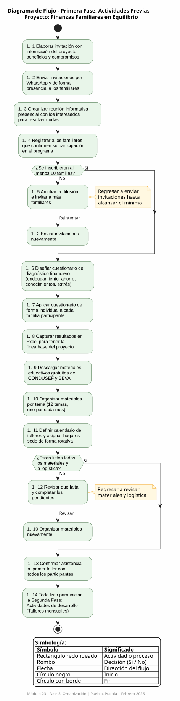

Talleres de Educación Financiera para Reducir el Endeudamiento en Familias de Puebla
Mónica J. Barrientos López | Módulo 23 Prepa en Línea SEP | Febrero 2026
En Puebla, México, muchas familias enfrentan un problema crítico: alto endeudamiento y falta de educación financiera básica.
Según la Encuesta Nacional de Inclusión Financiera 2024:
"Finanzas Familiares en Equilibrio" es un programa de educación financiera de 12 meses que combina:
12 talleres mensuales de 2 horas sobre presupuesto, ahorro, crédito, inversión y planificación financiera.
Acompañamiento individual para cada familia según su situación específica de deudas e ingresos.
Comunicación constante por Slack con tips semanales, resolución de dudas y motivación continua.
3 sesiones específicas para empoderar económicamente a las mujeres de la familia.
Desarrollar competencias financieras en 15-20 miembros de mi familia en Puebla, mediante un programa de 12 meses que combine talleres presenciales, asesorías personalizadas y seguimiento digital por WhatsApp, para reducir el endeudamiento en un 30%, fortalecer la capacidad de ahorro hasta alcanzar un fondo de emergencia equivalente a 3 meses de gastos, y promover la toma de decisiones económicas informadas que permitan romper el ciclo intergeneracional de mala administración del dinero.
Meta: Reducción promedio del 30% en deudas totales mediante el método bola de nieve al mes 12.
Meta: 80% de participantes aprueba evaluación de conocimientos financieros.
Meta: Participación de 3 generaciones (abuelos, padres, hijos) en el 40% de familias.
Meta: 60% de familias con fondo de emergencia de 3 meses de gastos al mes 12.
Meta: 70% de mujeres toma al menos 1 decisión financiera autónoma al mes 12.
Meta: 75% reporta sentirse más tranquilo respecto a su situación económica al mes 12.
Ámbito Económico: La mala gestión financiera genera un círculo vicioso de endeudamiento que afecta la calidad de vida. Este proyecto ofrece herramientas prácticas para romper ese ciclo.
Ámbito Social: Según ONU Mujeres, el 41% de mujeres no se separa de relaciones problemáticas por dependencia económica. El empoderamiento financiero femenino es crucial.
Ámbito Educativo: Al involucrar 3 generaciones, se asegura que los conocimientos financieros se transmitan y no se repitan los mismos errores generacionales.
| Fase | Actividad | Duración | Mes |
|---|---|---|---|
| Fase 1: Previas |
1. Convocatoria y registro | 1 mes | Mes 0-1 |
| 2. Evaluación inicial/diagnóstico | 1.5 meses | Mes 1-2 | |
| 3. Preparar materiales y logística | 1 mes | Mes 1-2 | |
| Fase 2: Desarrollo |
4. Impartir 12 talleres mensuales | 12 meses | Mes 1-12 |
| 5. Asesorías personalizadas | 10 meses | Mes 2-12 | |
| 6. Sesiones perspectiva de género | 3 sesiones | Mes 4, 7, 10 | |
| 7. Seguimiento digital WhatsApp | 11 meses | Mes 2-12 | |
| Fase 3: Concreción |
8. Evaluaciones intermedia y final | 2 momentos | Mes 6, 12 |
| 9. Documentar resultados | 2 meses | Mes 11-12 | |
| 10. Plan de sostenibilidad | 2 meses | Mes 11-12 |
| Concepto | Detalle | Costo |
|---|---|---|
| Refrigerios talleres | $200 x 12 meses | $2,400 |
| Sesiones de género | $200 x 3 sesiones | $600 |
| Materiales impresos | Cuestionarios, plantillas, certificados | $500 |
| Evento de cierre | Celebración final mes 12 | $150 |
| Impresiones varias | Convocatoria, reportes, evaluaciones | $250 |
| TOTAL | $3,900 |
Nota: Herramientas tecnológicas (Slack, Google Forms, Google Calendar) son gratuitas. Laptop y proyector son prestados.
El diagrama de flujo muestra el proceso de la primera fase del proyecto, desde la difusión de la convocatoria hasta la preparación de materiales y logística. Incluye 14 pasos con 2 puntos de decisión críticos:

Diagrama de Flujo completo disponible en documentación del proyecto
Rol: Difusión y logística
Tiempo: 2-3 hrs/mes
Fase: 1 y 2
Rol: Proporcionar espacio para talleres
Tiempo: 3-4 hrs por turno
Fase: 2
Rol: Apoyo en temas técnicos (crédito, inversión)
Tiempo: 4-6 hrs/mes (meses puntuales)
Fase: 2
Rol: Co-facilitar sesiones de empoderamiento
Tiempo: 3-4 hrs por sesión
Fase: 2 (meses 4, 7, 10)
Rol: Multiplicadores, continuidad post-mes 12
Tiempo: 5 hrs capacitación + 2 hrs/trimestre
Fase: 3
La colaboración es esencial porque:
El esquema muestra la estructura jerárquica del proyecto:
Esquema de División del Trabajo disponible en documentación del proyecto
El organigrama muestra la estructura de colaboración con 5 perfiles de colaboradores coordinados por la facilitadora principal, cada uno con tareas específicas distribuidas en las 3 fases del proyecto.
Se elaboró un Diagrama de Gantt completo con:
Acciones: Documentar todo, compartir historias de éxito, celebrar logros, crear manual de mejores prácticas.
Acciones: Simplificar contenidos, cambiar horarios, ofrecer incentivos, acompañamiento intensivo, alianzas con CONDUSEF.
| Estándar | Meta | Cuándo se mide |
|---|---|---|
| 1. Participación inicial | 15-20 familias inscritas | Mes 1 |
| 2. Asistencia a talleres | 75% promedio | Mensual |
| 3. Uso de presupuesto | 100% de familias | A partir mes 3 |
| 4. Reducción de deudas | 30% promedio | Mes 12 |
| 5. Fondo de emergencia | 60% con 3 meses ahorrados | Mes 12 |
| 6. Conocimientos financieros | 80% aprueba evaluación | Mes 6 y 12 |
| 7. Empoderamiento femenino | 70% toma decisiones autónomas | Mes 12 |
| 8. Reducción estrés | 75% reporta menos estrés | Mes 12 |
| 9. Participación 3 generaciones | 40% de familias | A partir mes 3 |
| 10. Sostenibilidad | 5 líderes capacitados | Mes 11-12 |
¿Qué es? Slack es una plataforma de comunicación profesional que organiza conversaciones en canales temáticos, permite mensajería directa, videollamadas, compartir archivos y se integra con múltiples herramientas.
¿Qué es? Google Forms es una herramienta gratuita para crear cuestionarios, encuestas y formularios en línea, con respuestas que se almacenan automáticamente en hojas de cálculo para análisis.
¿Qué es? Google Calendar es una herramienta de gestión de tiempo que permite crear calendarios compartidos, programar eventos con recordatorios automáticos, invitar participantes y sincronizarse con múltiples dispositivos.
Estas tres tecnologías funcionan como un ecosistema integrado:
Cuando Google Calendar crea un evento, se notifica en Slack. Cuando Google Forms recibe respuestas, puedo compartir resultados en Slack. Todo se conecta para crear un flujo de trabajo eficiente.
Al principio escribía metas vagas como "las familias mejorarán sus finanzas". Tuve que aprender a ponerle números concretos: ¿Cuánto es mejorar? ¿Cómo lo mido? Investigar sobre escalas de medición me tomó horas.
Nunca había trabajado con esta herramienta. Distribuir 10 actividades en 12 meses, calcular tiempos realistas y visualizar traslapes fue un desafío técnico y de planificación.
Balancear entre herramientas innovadoras versus realistas fue difícil. Slack suena increíble pero ¿lo usarán familias que apenas usan WhatsApp? Tuve que pensar en la brecha digital.
Escribir que el proyecto podría fracasar fue emocionalmente duro. Pero también liberador porque al pensar en soluciones me di cuenta de que hay acciones correctivas.
Transformé una idea vaga en un plan profesional con 10 actividades, 24 metas específicas, 10 estándares medibles y presupuesto realista de $6,000 pesos.
Aprendí a usar Diagramas de Gantt, definición de estándares SMART, análisis de escenarios y gestión de riesgos. Ya no solo tengo buenas intenciones, tengo un plan ejecutable.
Desarrollé criterio para elegir tecnologías según necesidades específicas. Entiendo que no hay herramientas "buenas o malas", sino soluciones adecuadas o inadecuadas según el contexto.
Fortalecí competencias de trabajo independiente, manejo de procesadores (Word, Excel), consulta de fuentes confiables y capacidad para generar fuentes de empleo.
"Este proyecto me enseñó que la diferencia entre soñar con cambiar algo y realmente cambiarlo está en la planificación detallada, la medición objetiva y el uso estratégico de tecnología."
- Mónica J. Barrientos López, Módulo 23